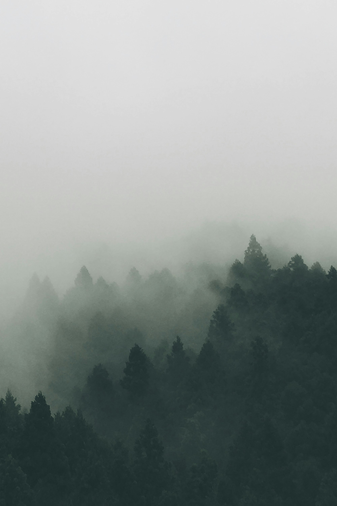
白馬・長野Hakuba, Nagano
Where the mountains breathe mist.
A twelve-suite hot-spring retreat, 1,100 metres above the valley.
理念Philosophy
Kiri is a quiet place at the edge of the clouds. Twelve suites of hinoki and stone, a spring that has run warm for a thousand years, and mornings when the whole valley vanishes into mist. Nothing is asked of you here, except to slow down.
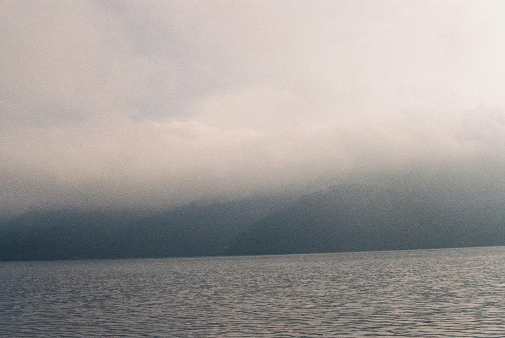
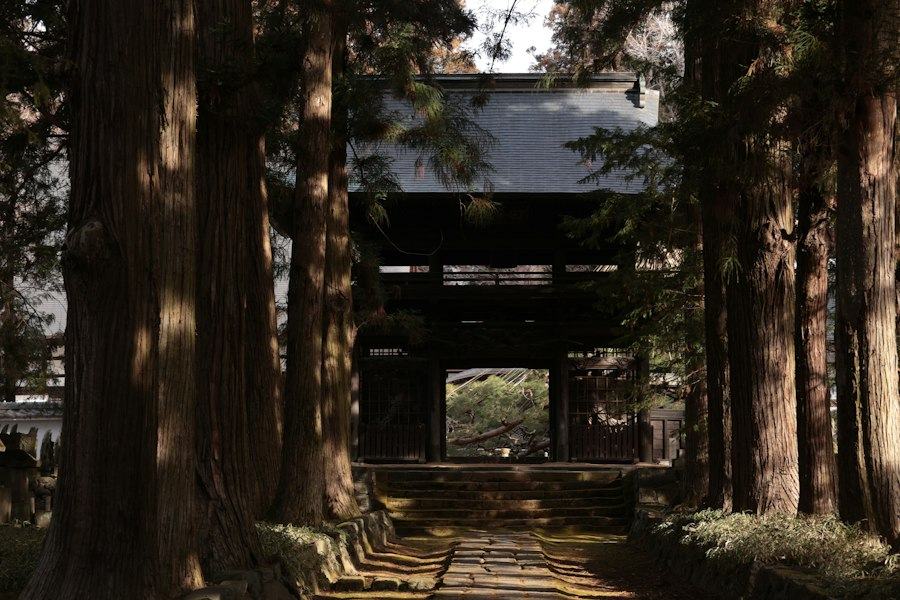
We built Kiri around three things the mountain already gave us: water, wood and weather. Everything else, from the slow kaiseki dinner to the unlit path to the bath, follows from them.
- 12 Suites, never more
- 1,100m Above sea level
- 42°C At the spring source
客室Rooms & Suites
Twelve rooms, each facing the ridge.
Tatami, hinoki and wide glass. Every room is set so the first thing you see in the morning is the mountain.
-
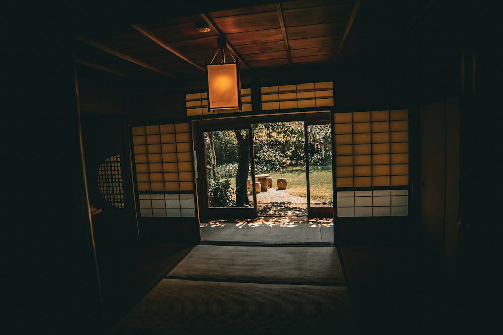
霧の間Mist Room
A low futon, a window seat, and a view straight into the morning cloud.
from ¥68,000 / night
View room -
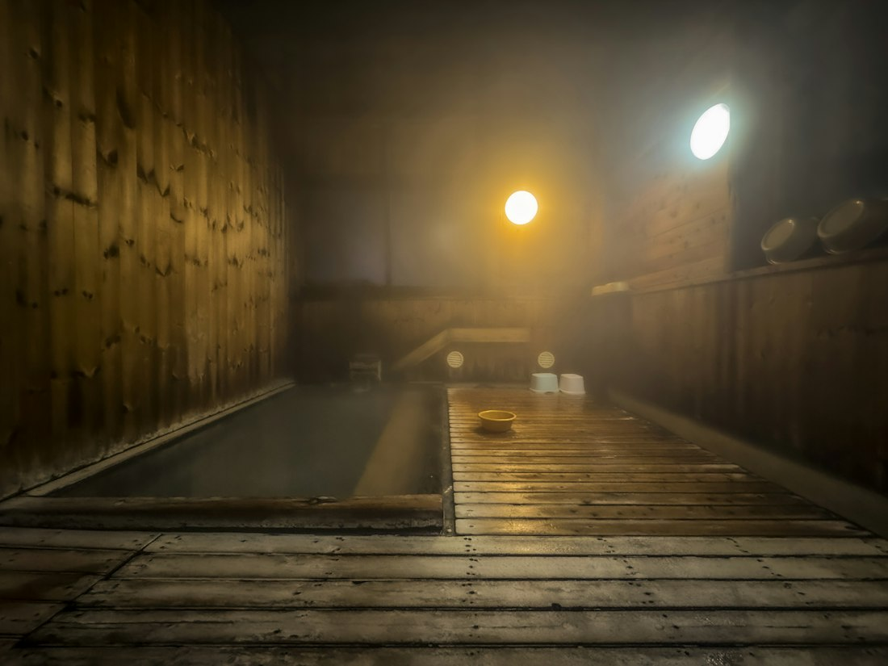
檜Hinoki Suite
A private cypress bath on the terrace, fed directly from the spring.
from ¥98,000 / night
View suite -
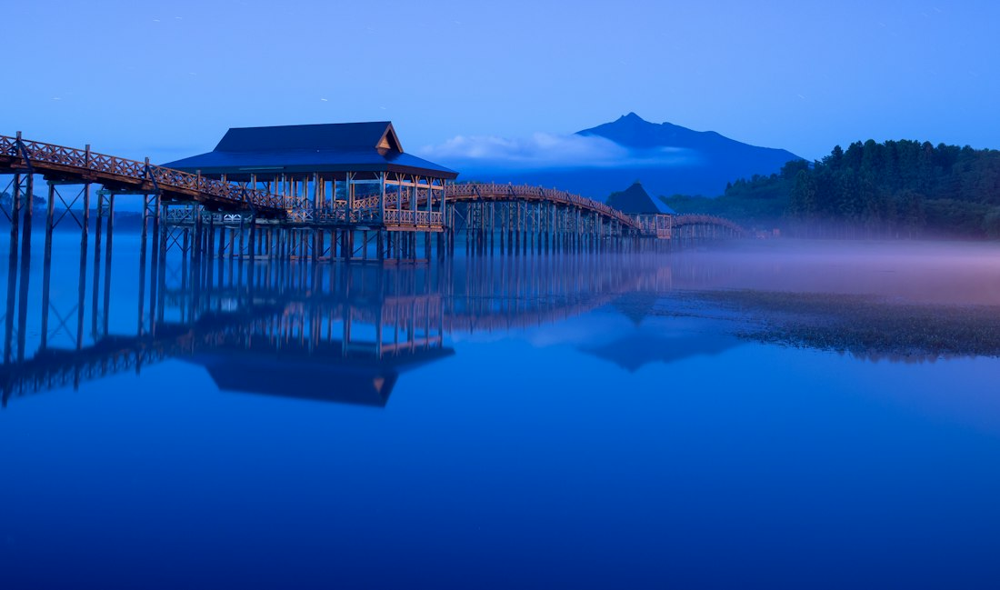
湖畔Lake House
A private house at the end of its own pier, with a fire pit and an open-air bath.
from ¥168,000 / night
View house
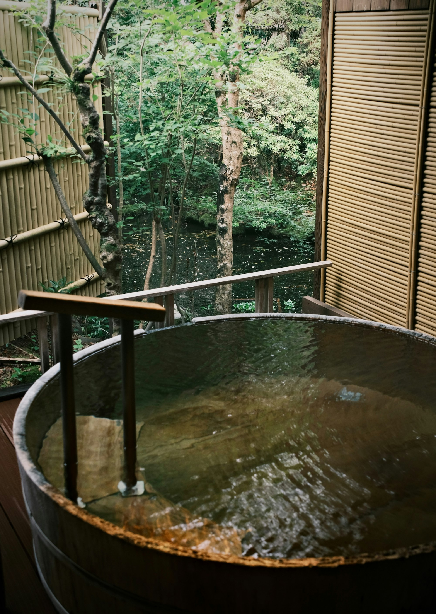
Our rotenburo sits on a ledge of granite above the river. The water rises at 42°C from a source two hundred metres below the hotel, rich in sodium bicarbonate, the kind locals call bijin-no-yu, the bath of beauty. Come at dawn, when the steam and the mist become the same thing.
- Source
- Natural spring, 42°C
- Waters
- Sodium bicarbonate
- Open
- 5:00 – 24:00
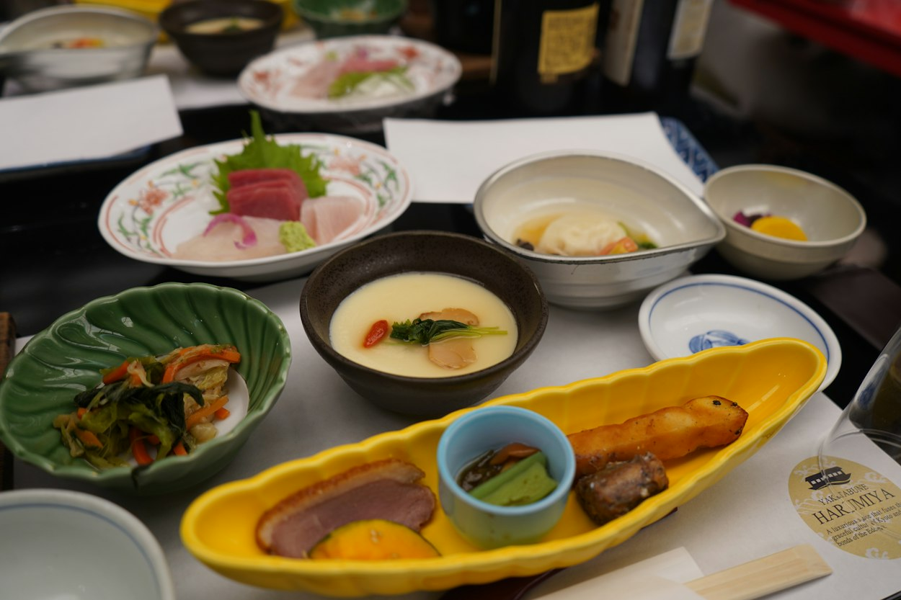
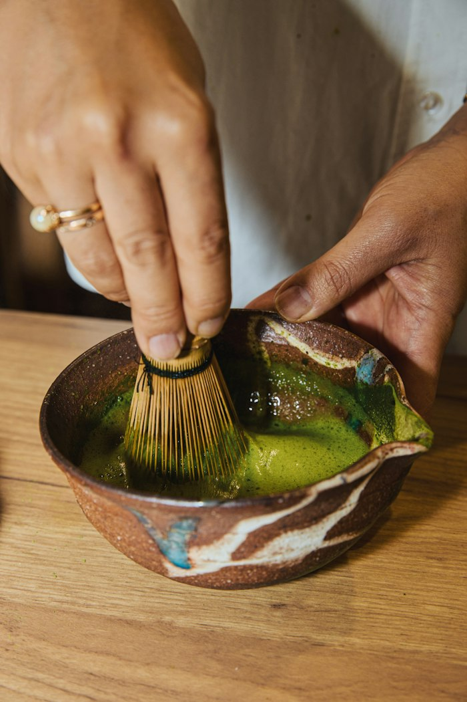
食Dining
Kaiseki, written by the season.
Chef Aoi Mori cooks with what the valley offers each week: mountain vegetables, river fish, Shinshu soba and wild mushrooms. Dinner is served in seven quiet courses.
- 01先付Sakizuke, a small opening bite
- 02八寸Hassun, the seasonal platter
- 03向付Mukozuke, river and sea sashimi
- 04焼物Yakimono, grilled over binchotan
- 05炊合Takiawase, simmered vegetables
- 06食事Shokuji, rice from the terraces
- 07水物Mizumono, fruit and matcha
四季Seasonal Experiences
Four seasons, four different mountains.
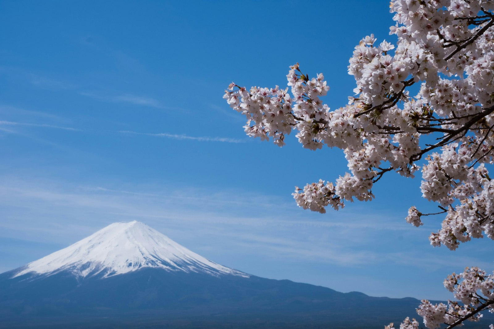
April – May
Snowmelt & blossom
Late cherry blossom against still-white peaks. Forage for sansai, the wild mountain greens, with our chef.
- Sansai foraging walk
- Blossom viewing by the river
- Spring kaiseki
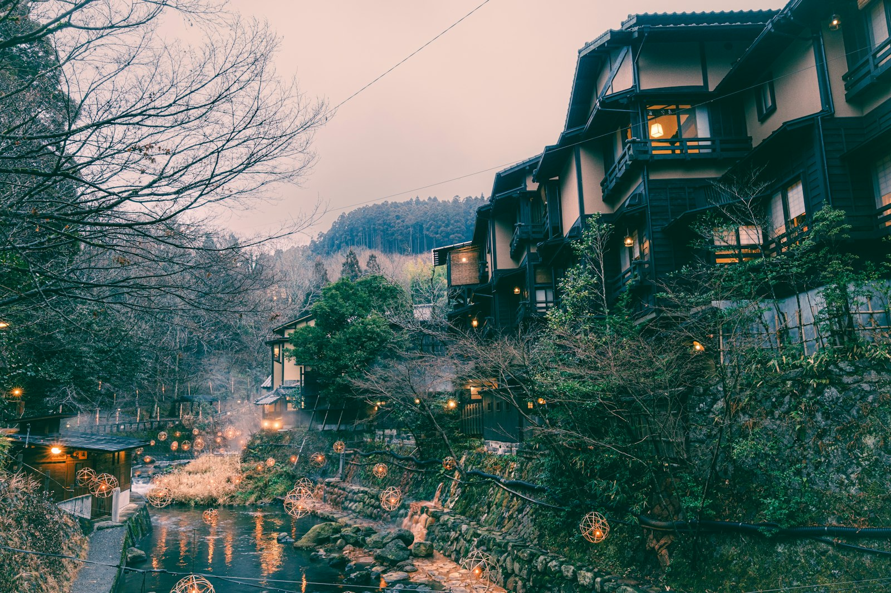
June – August
Cool forest, clear water
Ten degrees cooler than Tokyo. Canoe at dawn on Lake Aoki, then hike to waterfalls hidden in the cedar forest.
- Sunrise canoe on Lake Aoki
- Waterfall trail with a guide
- Firefly evenings in early July
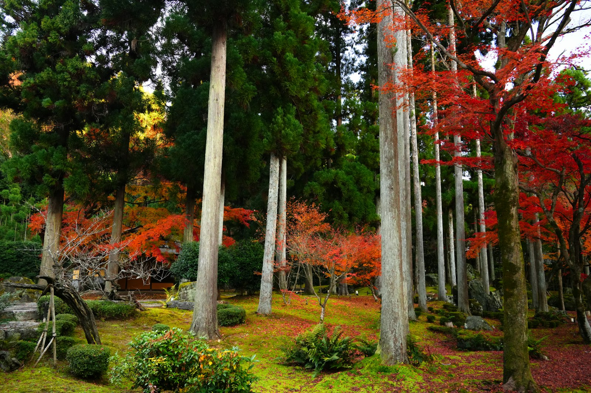
September – November
Three-tone mountains
Snow on the summit, red maple on the slopes, green in the valley. Hakuba calls it sandan kōyō.
- Gondola to the autumn ridge
- Wild mushroom kaiseki
- Moon-viewing in the bath
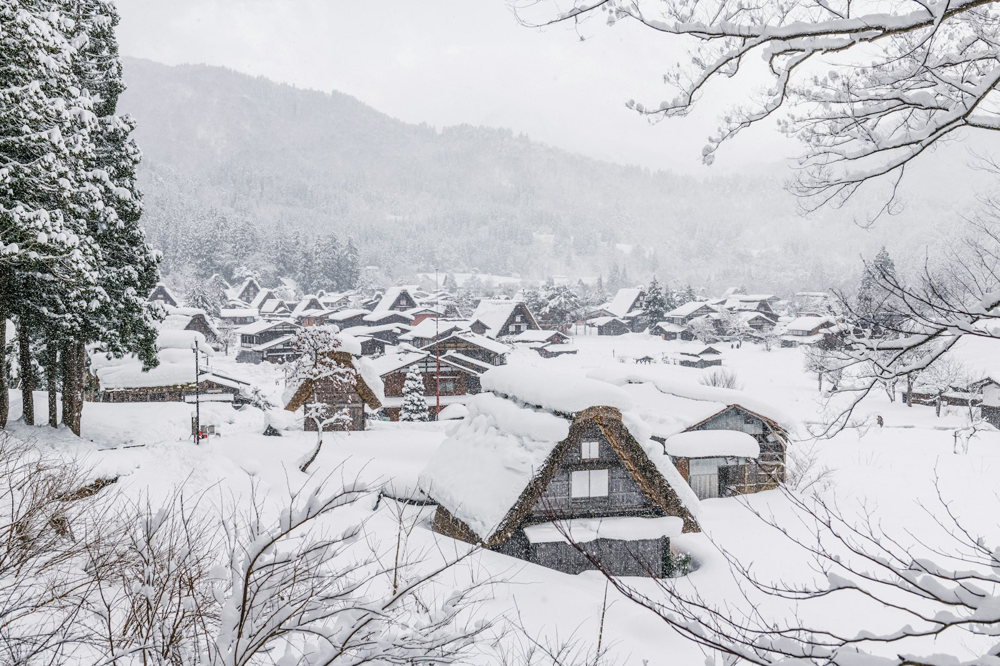
December – March
Powder & steam
World-famous Hakuba powder by day, a steaming bath under falling snow by night.
- Private ski guide & ski valet
- Snowshoe walk by lantern light
- Hot sake by the irori hearth
風景Gallery
Around the valley.
交通Access
Two hours, and a world away.
Kiri sits at the end of a forest road above Hakuba village. We collect every guest from Nagano Station.
- 80 min Tokyo → NaganoHokuriku Shinkansen
- 60 min Nagano → KiriComplimentary private car
0000 Hokujo, Hakuba-mura, Kitaazumi-gun, Nagano
長野県北安曇郡白馬村北城0000
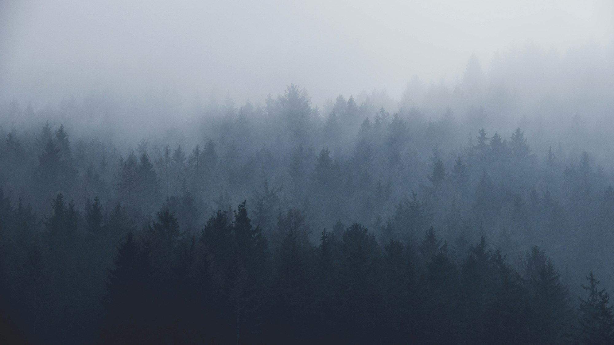
ご予約Reservations
Let the mist find you.
Best rates when you book direct, with a late check-out and a welcome tea ceremony on arrival.